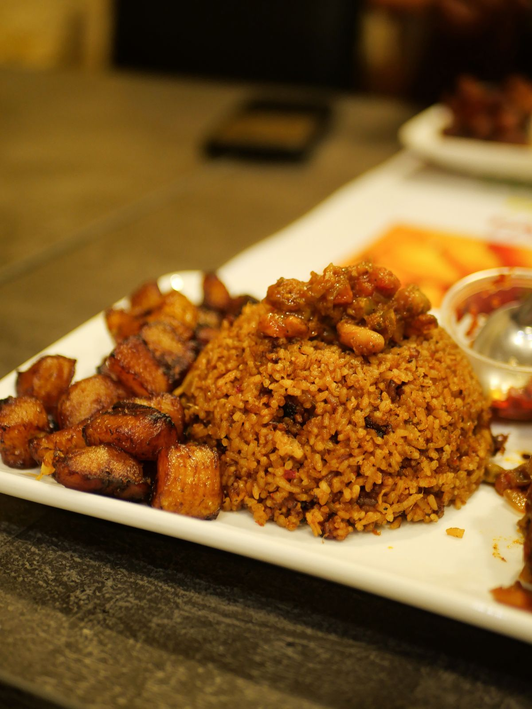
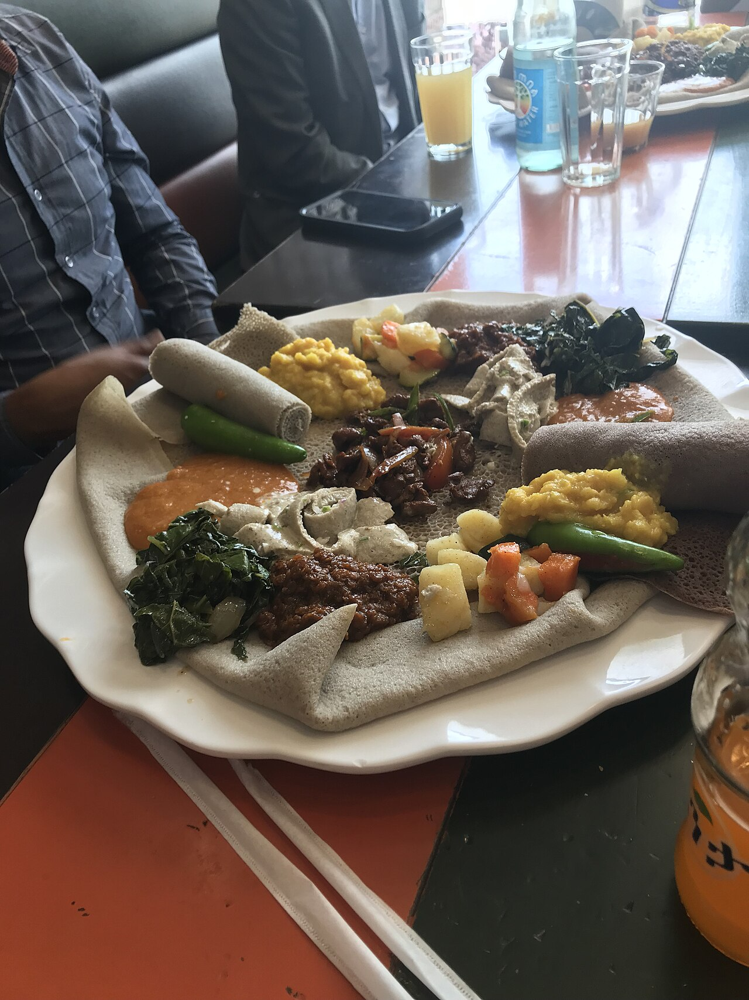
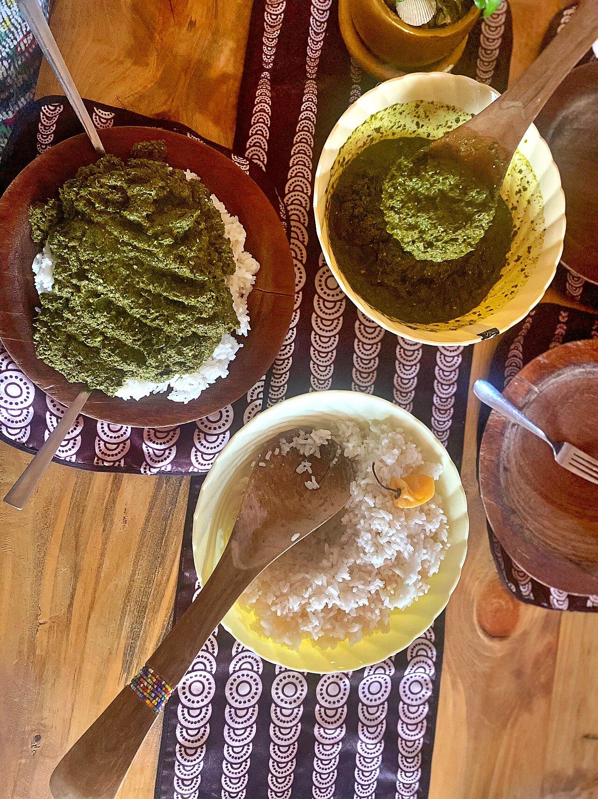

Jollof Rice
Long-grain rice simmered in a smoky tomato, onion and scotch bonnet sauce.
Classic dishes from every corner of Africa. Filter by region, then tap ❤️ Favorite to save the ones you want to cook. Your favorites stay saved in this browser.

Long-grain rice simmered in a smoky tomato, onion and scotch bonnet sauce.



